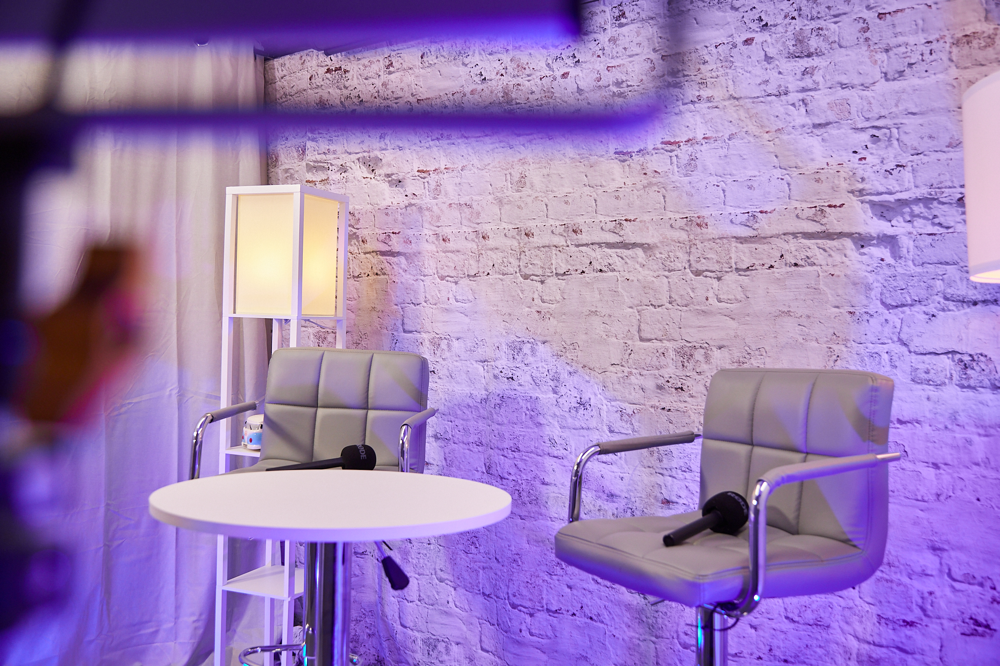

Audio-only podcasting is no longer enough. In 2025, the fastest-growing shows in the world are video-first, and the data is impossible to ignore: YouTube has become the most popular platform for podcast consumption, and short vertical clips drive the overwhelming majority of new-audience growth. If you are serious about your podcast, video is no longer optional — and choosing the right video podcast studio in London is one of the most important decisions you will make.
Why Video Podcasting Wins
There are several reasons video has overtaken audio-only formats so decisively:
Discovery: Audio podcasts are notoriously hard to find. Video, by contrast, lives on YouTube, TikTok, Instagram, and Shorts — platforms with powerful recommendation engines that put your content in front of new viewers automatically.
Connection: Seeing a host's face and body language builds trust and intimacy far faster than audio alone. Viewers feel like they know you, and that connection turns casual watchers into loyal subscribers.
Repurposing: A single video recording can be cut into dozens of short clips for social media. One hour in the studio can fuel weeks of content across every platform — something audio simply cannot match.
Monetisation: Brands and sponsors increasingly expect video deliverables. A video podcast opens up YouTube ad revenue, sponsored segments, and far more valuable partnership opportunities.
What Makes a Great Video Podcast Studio
Not every studio is equipped for professional video. The best video podcast studios in London share a few essential features. Multi-camera setups capture wide shots and close-ups so an editor can cut dynamically between angles. Professional lighting flatters every guest and gives footage that cinematic, high-end look. A skilled director or engineer switches cameras live and manages framing so you do not have to. And a variety of visually distinct sets ensures your show stands out rather than blending into the sea of identical-looking podcasts.
Where to Film in London
London Media Lounge was purpose-built for the video podcasting era. With 13 unique studio sets, multi-camera 4K recording, professional lighting, and a dedicated onsite engineer included in every session, it removes every technical barrier between you and broadcast-quality video. Whether you want a warm, intimate two-person setup, a bold neon backdrop, or a professional green screen for unlimited creative flexibility, you can film it all under one roof.
From One Session to Months of Content
The real power of a video podcast studio is content efficiency. Record a single long-form episode and walk away with the full video for YouTube, a dozen vertical clips for TikTok and Reels, audiograms for audio platforms, and stills for your social channels. This is how the most successful creators stay visible everywhere without burning out — they capture once and publish everywhere.
Make the Switch to Video
If your podcast is still audio-only, you are leaving growth on the table. The move to video is the single biggest upgrade most creators can make, and doing it in a professional studio means you look the part from the very first frame. Ready to film? book your session at London Media Lounge and start turning one recording into months of content.